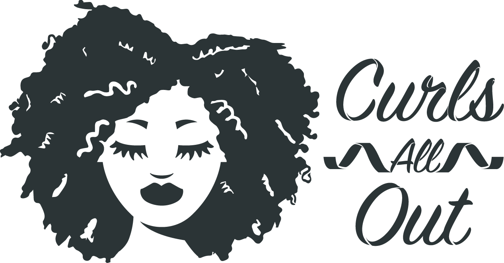
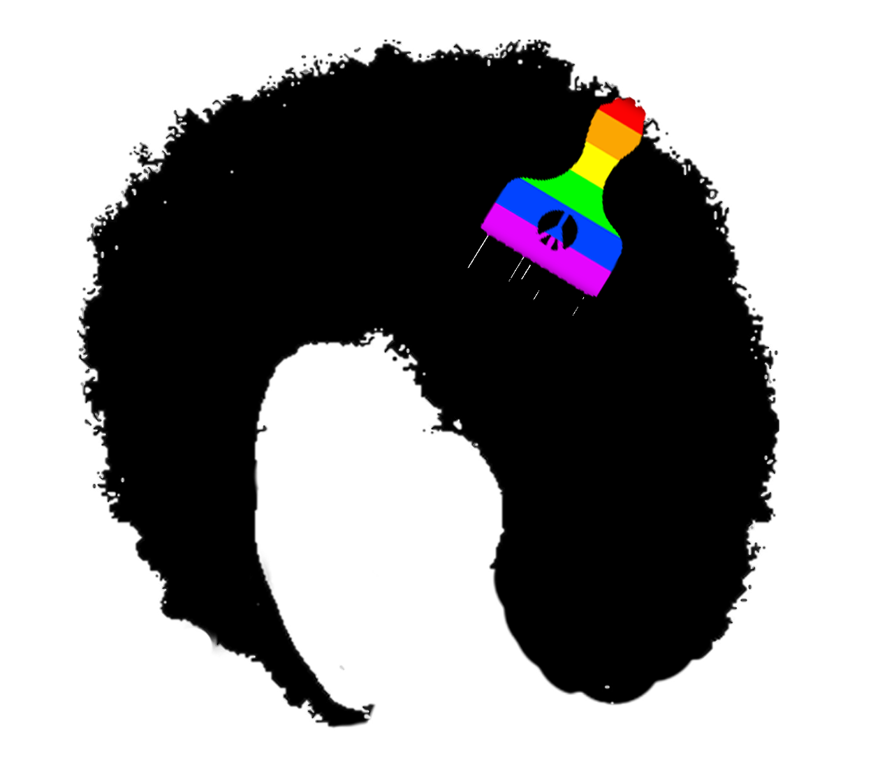

What is "Nappy"?
Nappy stands for natural hair. This movment was born in the US in the 70's with the black panters. The philosophy of the Nappies is to accept your curls in order to accept yoyrself and to show that the white beauty isn't the only kind of beauty. For ages black and brown women have been forced to hide their nappy, frizzy, curly hair and straighten them in order to look more "normal". With Nappy App you can find the products that are good for your specific type of hair and organize your hair routine to let your natural beauty shine! ❤️
why nappy app?
Nappy App is here for you sis! We know the struggle of finding the right poduct for your type of hair, how complicated it is to find and organize your hair routines. With this app, you can retrive all the product that are good for your maine and organize your Nappy journey to embrace your natural beauty!